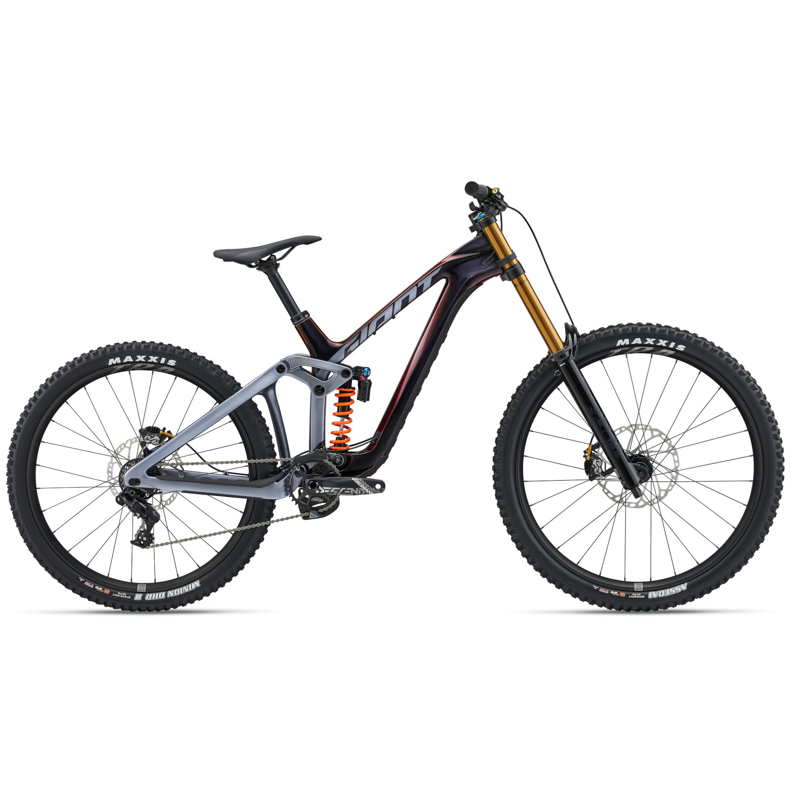
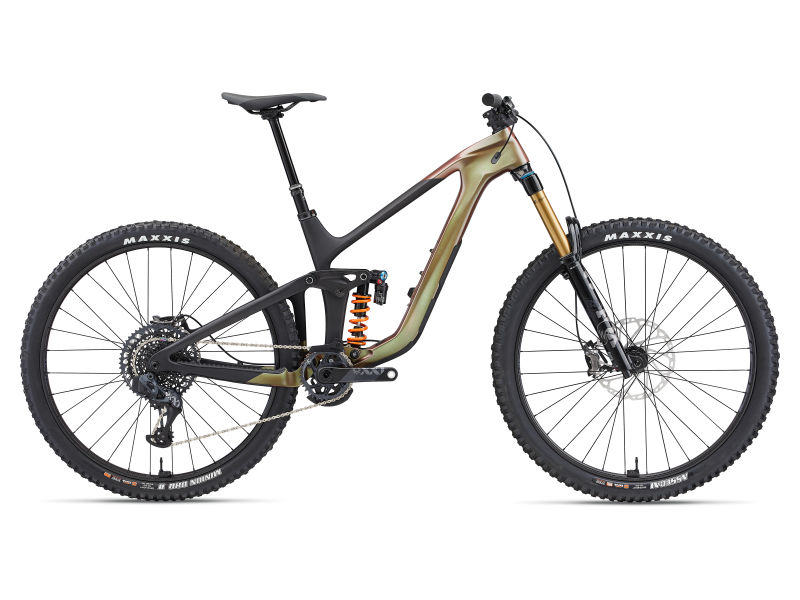
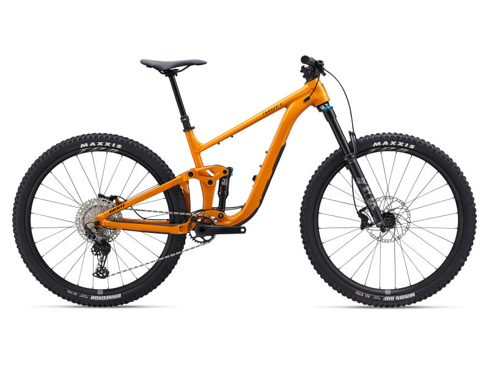

Giant es el mayor fabricante de bicicletas del mundo. Fundada en 1972 en Taiwan, ofrece bicis de calidad para todos los niveles y disciplinas.
Giant Glory Advanced

Precio: $6.999.00
Bicicleta de descenso con 200mm de recorrido, perfecta para los saltos mas grandes.
Giant Reign

Precio: $5.499.00
Bicicleta de enduro de alto rendimiento con suspensión de 170mm y geometría avanzada.
Giant Trance

Precio: $4.299.00
Bicicleta trail versatile con 150mm de recorrido, perfecta para senderos exigentes.